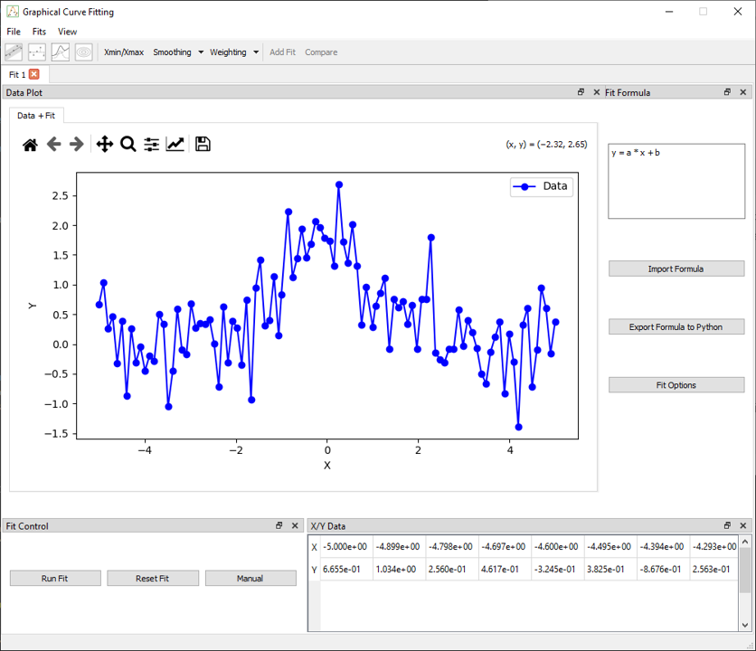
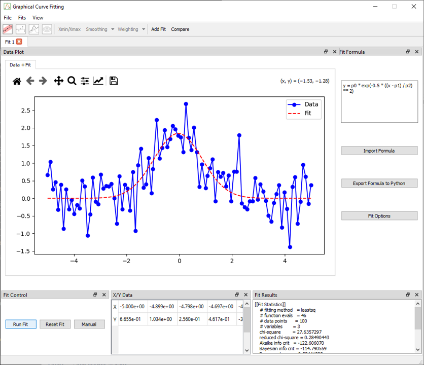

Getting Started
What is Graphical Curve Fit for Python ?
Graphical Curve Fit for Python is a graphical tool designed for scientists, engineers, and students to explore curve fitting strategies interactively.
Unlike libraries such as lmfit, emcee, or , scipy.odr this application is not a backend library. Instead, it offers a full graphical interface for visualising, adjusting, and comparing fits, especially when testing hypotheses, discovering models.
Behind the scenes, the fitting itself is handled by scientific libraries:
lmfitfor least-squares optimization and model abstraction,scipy.odrfor orthogonal distance regression,emceefor Bayesian sampling using MCMC.
Graphical Curve Fit for Python acts as a frontend to these tools, with a focus on interactivity, model clarity, and visual output.
Launching the Application
Once installed (see Installation), launch the application from your terminal:
gcfpy
You should see the main interface open within a few seconds.
Default View on Launch

Upon startup, the application opens with:
- A menu that allows you to load data, add tabs, and manage dock visibility,
- A toolbar toggle plots and views of the fits, apply x selection, activate compare dock.
- A Fit tab (you can open multiple), each representing an independent session,
-
Two dock widgets:
-
Data Plot: central plot of data and fitted models,
- Fit Formula: input area for model equations,
Basic Workflow
1. Load a Dataset
From the top menu, choose:
File > Load Data
Selecting a .csv file with at least X and Y columns is required. Optional columns such as Z, X_err, and Y_err are also supported. Some data are available in examples/data.
Once loaded:
- The X/Y Data dock is populated.
- The data appears in the plot area.
- Fit actions are enabled.

When data is loaded, two additional docks become visible:
- The Fit Control dock, which allows running the fit defined in the Fit Formula dock
- The X/Y Data dock, which displays the loaded dataset in table format
In the toolbar, several options become available:
- Xmin/Xmax selection to restrict the fit to a specific x-range
- Smoothing tools to process noisy data
- Error handling that automatically enables weighting if
X_errorY_errcolumns are present in the data
2. Enter a Formula
In the Fit Formula dock, enter your model using a Python-like syntax. For example:
y = a * x + b
The application automatically extracts the parameters (a, b) and updates the fitting configuration. You can use mathematical functions like sin, exp, log, abs, and more.
Physical constants can also be added to the formula; see the list and syntax in Fit Formula
Advanced options like importing/exporting formulas or editing them via GUI are also available.
3. Run the Fit
To perform a fit:
- Click the Fit button on the toolbar,
-
Or open the Fit Control dock to select:
-
The fitting method (
Least Squares,ODR,MCMC), - Parameter settings and bounds,
- Weighting strategies.

Once the fit is complete:
- The result appears in the Fit Results dock,
- The fitted curve
In the toolbar, several options for different plots become available when the fit is made.